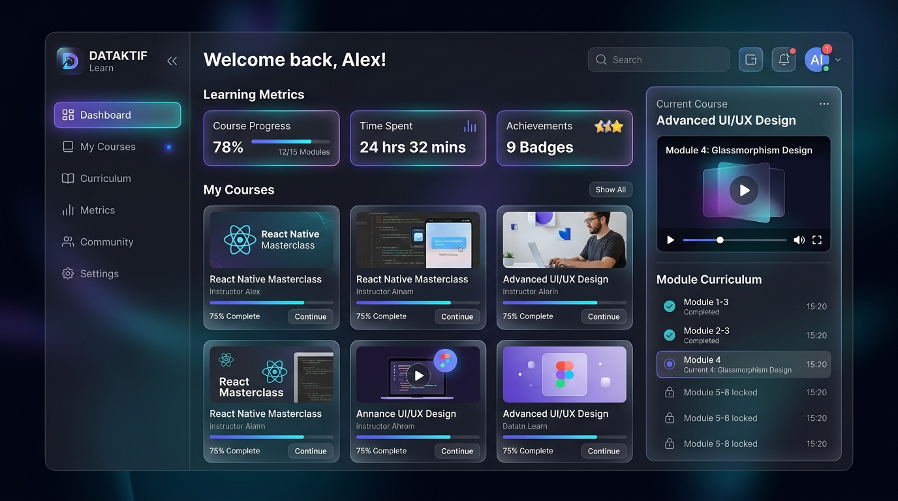

Featured Web & LMS Platform
Dataktif Learn — Modern Local Video Course

Visit Live WebDataktif Learn adalah platform pembelajaran daring (Local Video Learning Management System / LMS) yang mengubah koleksi folder video kursus di komputer lokal Anda menjadi pengalaman belajar terstruktur dengan antarmuka modern yang interaktif, mulus, dan produktif.
Visi & Arsitektur Solusi
Dirancang untuk mengatasi hambatan belajar dari file video lokal yang berserakan. Dataktif Learn memetakan folder menjadi kurikulum bertingkat lengkap dengan ekstraksi thumbnail otomatis, HTTP 206 partial streaming berkecepatan tinggi, dan dashboard pelacakan progres belajar real-time.
Engineering & Lead Development
Dikonsep, dirancang, dan dikembangkan secara penuh oleh Farrel Berwyn, mengintegrasikan UI modern glassmorphism, pemrosesan multimedia otomatis, serta navigasi responsif bilingual.
Fitur & Arsitektur Inti Platform
Eksplorasi mendalam modul teknis dan pengalaman pengguna yang dibangun di dalam Dataktif Learn:
Pemindai & Manajemen Kursus Lokal
Pemetaan Struktur Otomatis: Folder utama dikenali sebagai 1 Main Course dengan sub-folder otomatis dipetakan menjadi bab/modul kurikulum.
Ekstraksi Thumbnail & Durasi: Menghasilkan thumbnail resolusi tinggi langsung dari frame video lokal via ffmpeg & sharp.
HTTP 206 Partial Streaming: Pemutaran video lokal dengan buffering instan dan scrubbing tanpa hambatan. Dilengkapi manajemen multi-library yang fleksibel.
Beranda & Dashboard Pembelajaran
Hero Banner Beranimasi Video: Background video dinamis dengan kartu sambutan personal Farrel Berwyn - Student.
2 Kartu Melayang (Floating Rotated Cards): Kartu kiri berotasi ke kiri dengan tombol aksi "Mulai Belajar" biru di atas gambar; Kartu kanan berotasi ke kanan menjorok keluar batas banner dengan bayangan dramatis.
4 Metrik Real-time: Kursus Aktif, Pelajaran Selesai, Total Jam Belajar, dan Tingkat Kelulusan (%).
Katalog Kursus & Navigasi Cerdas
Halaman Kursus Terpisah: Menampilkan seluruh katalog berlatar belakang video pemandangan alam berulang (white fade-out/fade-in loop) dengan padding lega.
Dropdown Kategori & Pencarian: Tombol Cari bertransisi mulus (smooth card expansion) dengan shortcut Escape dan clear button.
Floating Frosted-Glass Navbar: Berubah otomatis menjadi floating card pill saat di-scroll (> 50px) dengan layering pop-up konsisten di atas navbar.
Classroom Player & Kurikulum Berjenjang
Interaktif & Responsif: Pemutar video lengkap dengan kontrol scrubbing presisi, penyimpanan progres tontonan terakhir (resume progress), dan penanda selesai (Mark Completed).
Auto-Advance Playback: Otomatis memutar pelajaran berikutnya saat video selesai diputar.
Ringkasan Kelulusan: Halaman apresiasi pencapaian begitu seluruh bab kurikulum sukses diselesaikan.
Multi-Bahasa & Manajemen Profil Pengguna
Bilingual Switcher: Beralih instan dengan satu sentuhan antara Bahasa Indonesia dan English (US) di seluruh antarmuka dan teks aplikasi.
Profil Pengguna Terintegrasi: Profil default Farrel Berwyn (Student) yang dapat dipersonalisasi secara reaktif, menyimpan preferensi belajar, bookmark materi penting, dan statistik keterlibatan belajar lokal.
Technical Specs
- Live Experience: farrelberwyn.github.io/Dataktif-Learn/
- Streaming Protocol: HTTP 206 Partial Content Range Video Streaming
- Media Automation: FFmpeg & Sharp automated frame thumbnail pipeline
- Navigation System: Floating frosted-glass pill navbar & smooth search modal
- Localization: Dual-language runtime switcher (ID / EN)